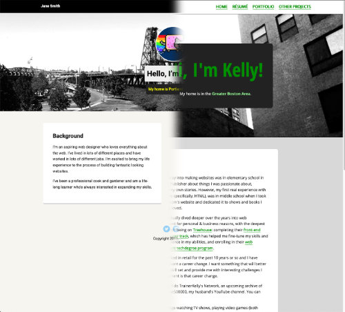

Project 1: Customize Your Profile Page
The first project needed me to: update the profile picture; update all text on the page; link to new page(s) and create content for them; and update links accordingly. I couldn't help but feel confident. Tweaking HTML and CSS is something that I have been doing FOR YEARS!
I'm really happy with the overall product, although there are a few things I would personally tweak. However, I worked on this project for over a week, hit some burnout, got sick, and felt that holding off on some of the more minor tweaks would be more beneficial for me in the long run. I may do them if I don't meet "exceed expectations", but based off the criteria given, I do believe I have. I do not want this project to hold me back from continuing with the techdegree.
I feel my biggest changes to the site was giving an overall colour scheme to it and removing some of the more gimicky features.
Maybe it's because I do a lot of illustrations, but I really wanted the colours on my first project to work well together, feel balanced, bring your eye around, and feel more ~me~. I think I succeeded for the most part, all while making sure my website was also accessibility-friendly (hence why links are such a dark colour and they have an underline).
The gimicky features I removed, namely, was the transformation to the profile avatar which would cause it to grow a bit larger & tilt and having the border change colour on the section blocks. I wasn't a huge fan of either of these things: I think they worked really well for a demonstration of what could be done with CSS, but I felt they had no place on my own profile site, so I removed them. Instead, I replace them with some slight animations.
I do believe I had to look up how to do animations on both Mozilla Developer Network and W3Schools.
Overall, I would say, I am pretty happy with how my project came out!
Gallery
I changed the colour scheme to better reflect who I am and (hopefully) to be more pleasing to the eye.
I'm very happy with how this project came out.